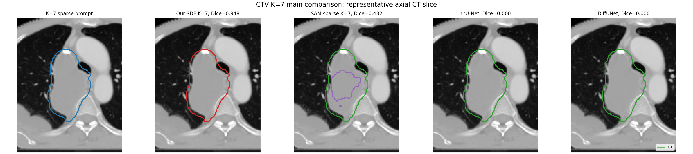
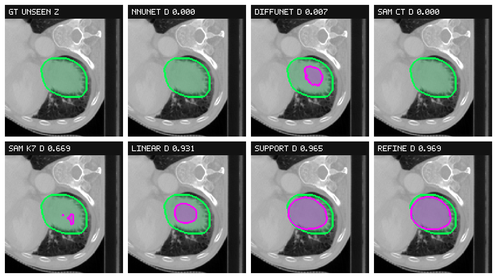
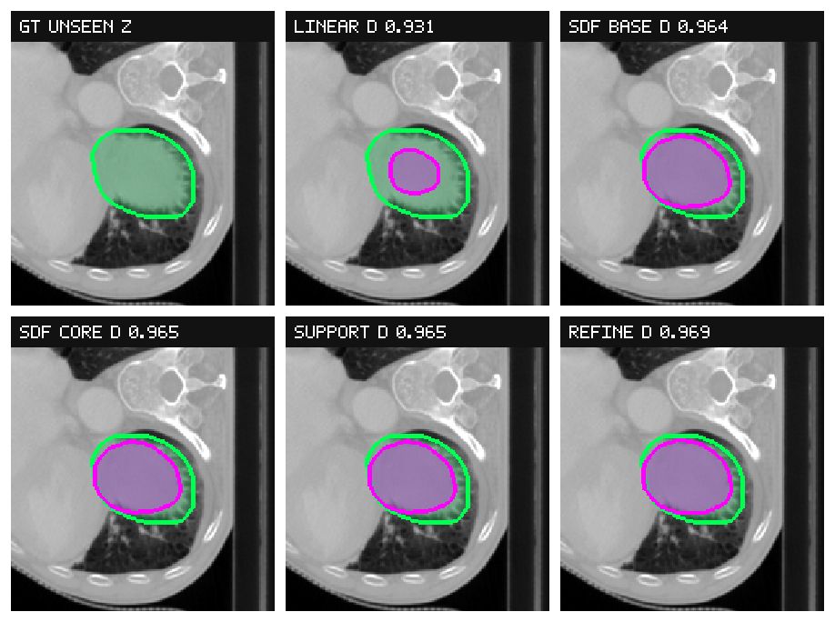
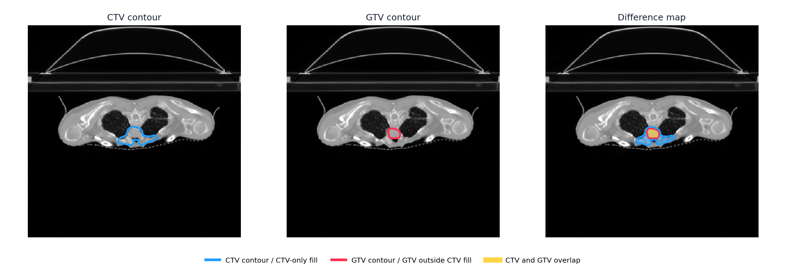
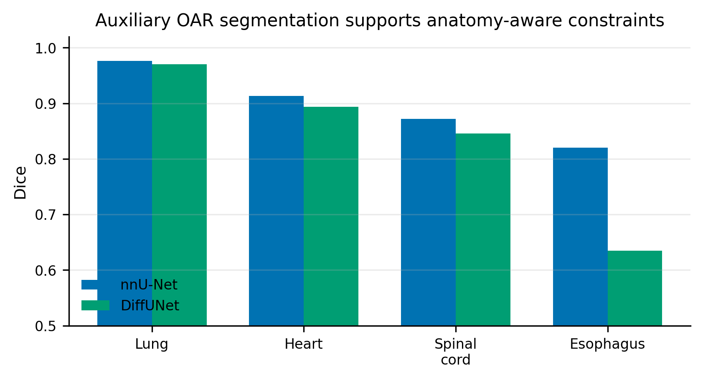

Problem framing
The task is not framed as fully automatic CTV segmentation from CT alone. Instead, the target is sparse-prompt CTV completion: a small number of 2D CTV prompt slices define the clinical target instance, while anatomical context and SDF propagation produce a constrained 3D candidate region.
This framing is intended for data preprocessing and target-mask completion under limited expert annotation. Complete expert CTV masks are used for retrospective training and evaluation, not as test-time input.
Method summary
Preprocessing stage
Sparse prompt slices are propagated along the axial direction as signed distance fields. Multiple support candidates are aggregated into a high-precision core and a high-recall envelope. The final pseudo-label is selected by the support-intersection rule.
Refinement stage
The refine network receives CT, sparse prompt information, pseudo SDF cues, core-envelope masks, and OAR-derived context. It predicts inclusion in the constrained uncertain region rather than performing unconstrained full-volume segmentation.
Main held-out CTV results
| Setting | Method | Test-time target information | DSC | uDSC | HD95 | ASD |
|---|---|---|---|---|---|---|
| No prompt | nnU-Net 3D full-resolution | None | 0.400 +/- 0.345 | - | 56.94 +/- 60.13 | 33.72 +/- 45.44 |
| No prompt | DiffUNet | None | 0.316 +/- 0.301 | - | 71.89 +/- 60.11 | 41.44 +/- 44.67 |
| Sparse prompt | SAM-Med3D, sparse target prompt | K=7 target slices | 0.422 +/- 0.159 | - | 21.32 +/- 9.23 | 5.54 +/- 3.06 |
| Sparse prompt | Linear mask interpolation | K=7 target slices | 0.912 +/- 0.048 | 0.876 +/- 0.057 | 3.90 +/- 1.66 | 1.22 +/- 0.66 |
| Sparse prompt | Support-intersection pseudo-label | K=7 target slices | 0.928 +/- 0.050 | 0.897 +/- 0.062 | 3.43 +/- 1.68 | 0.97 +/- 0.54 |
| Sparse prompt | Ours: OAR/SDF-constrained refine network | K=7 target slices | 0.934 +/- 0.045 | 0.906 +/- 0.054 | 3.11 +/- 1.37 | 0.84 +/- 0.48 |
DSC is Dice similarity coefficient. uDSC excludes prompted slices. Reported values are mean +/- standard deviation on 31 held-out CTV-positive scans.
Visual evidence
Dataset and CTV completion concept

Method comparison

Ablation progression

GTV and CTV difference

OAR context
OAR segmentation is used as anatomical context for the legal search space and downstream refinement. It is not presented as the main contribution, but it anchors the CTV completion workflow to clinically plausible thoracic anatomy.

Code entry points
The public repository excludes private CT volumes, labels, checkpoints, and generated prediction masks. The uploaded code preserves the workflow scripts, lightweight figures, manuscript tables, and audit notes needed to inspect the method.
pip install -r requirements.txt
python scripts/run_sparse_prompt_core_envelope_workflow.py --help
python scripts/run_k7_preprocess_variant_screen.py --help
python scripts/train_ctv_pseudo_refine_net.py --help
python scripts/evaluate_ctv_refine_safety_fusion.py --help